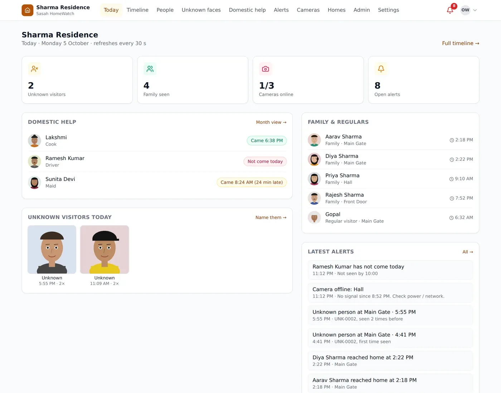
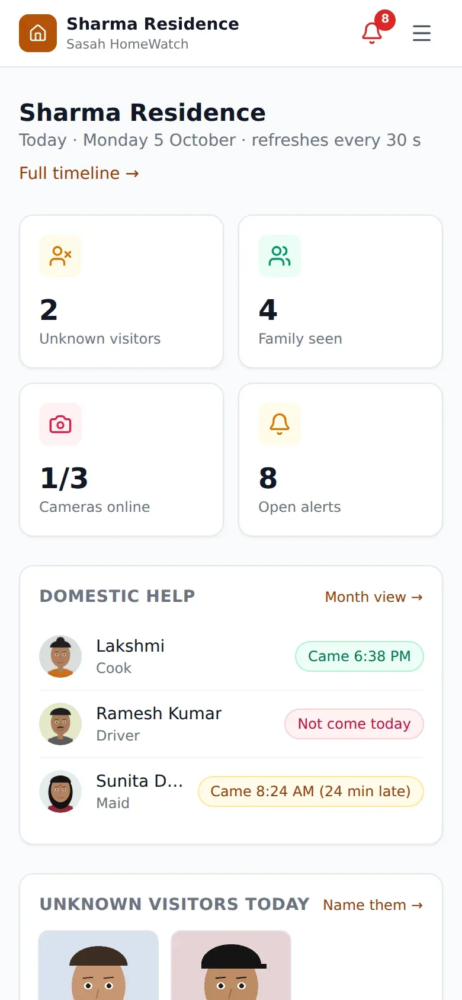
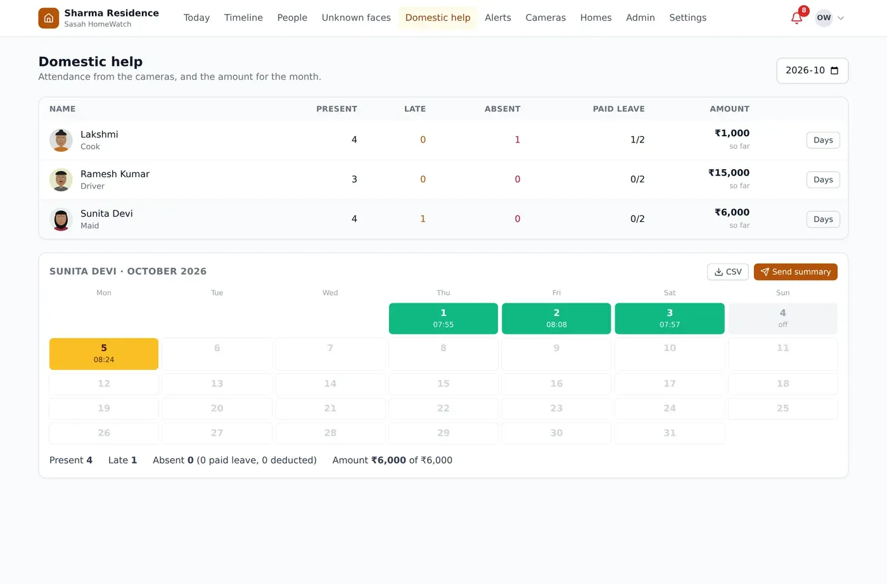
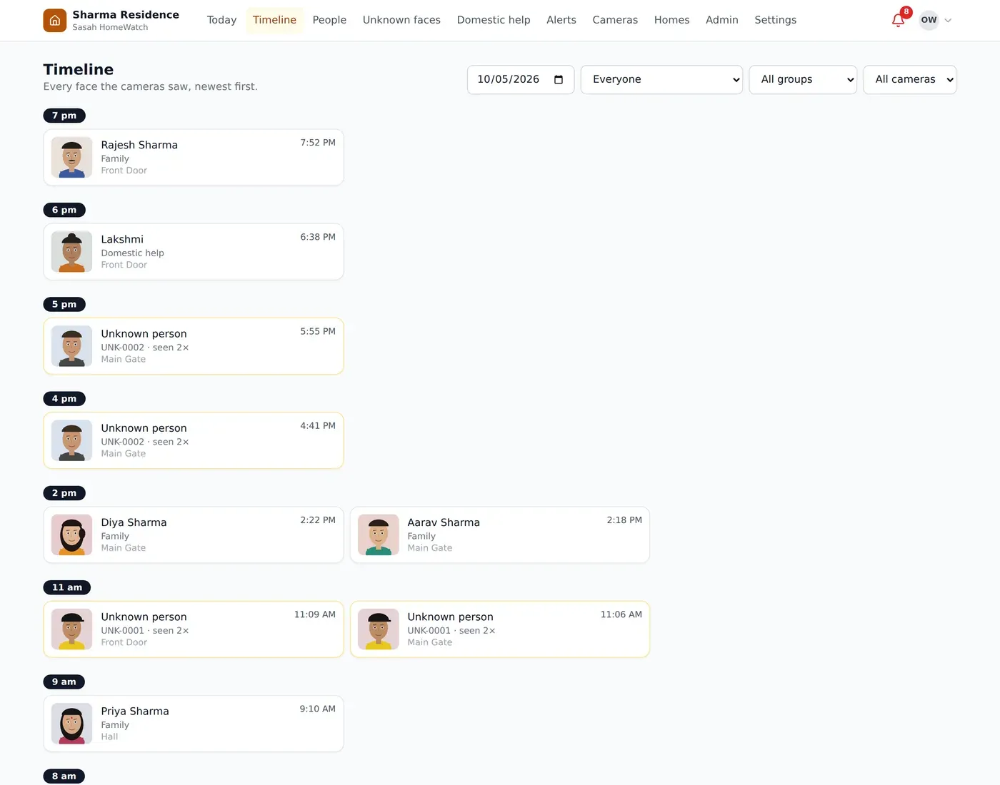
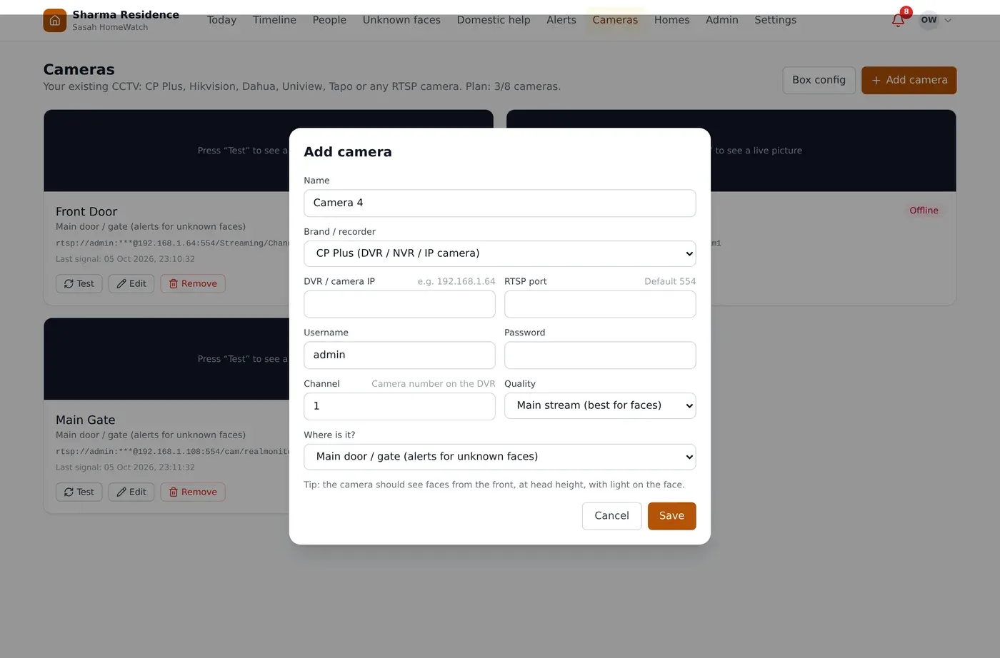
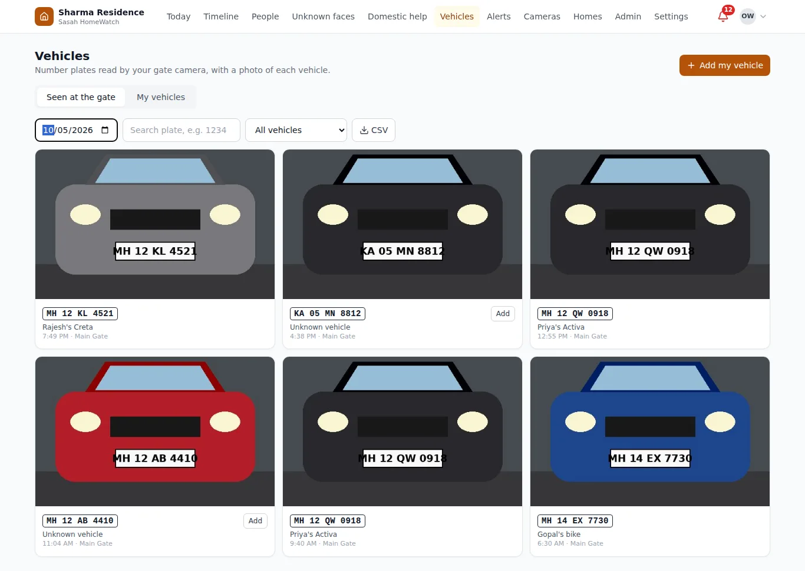
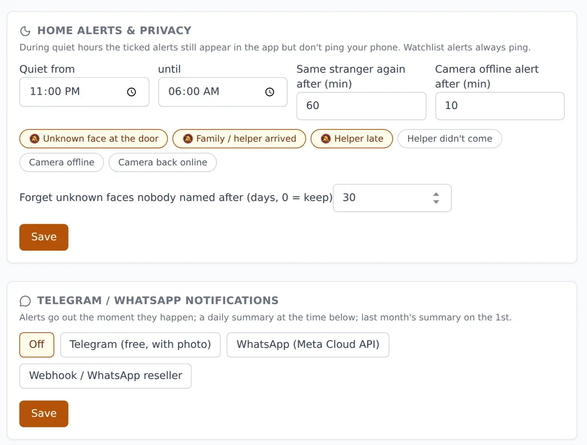
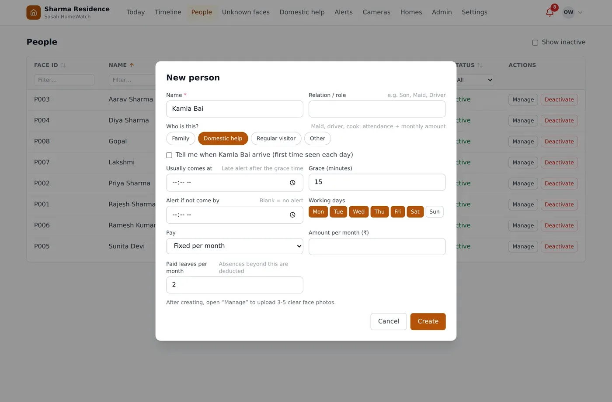

Know who's at your door. On the CCTV you already have.
Family, maid and driver are recognised automatically. A stranger at the gate? You get an alert with their photo. Everything stays inside your home.
- Works with CP Plus, Hikvision, Dahua, Tapo
- Telegram & WhatsApp alerts with photo
- Maid & driver attendance
- Car number plates


Real app screens with a demo home. Faces are illustrations.
Peace of mind, without watching footage
Stranger at the door
An alert with the person's photo when someone unknown is seen at your gate or door. One alert per visitor, not fifty.
Family arrivals
“Aarav reached home at 2:18 PM” — know the kids are back from school without calling.
Maid, driver, cook
Late arrival and “hasn’t come today” alerts, days present, and the month’s amount worked out for you.
Timeline with photos
Who came, when, and at which camera. No more scrolling through hours of DVR video.
Car & bike number plates
Your gate camera reads number plates: which vehicle came, when, with a photo. Alert for a watchlisted or unknown vehicle.
Watchlist & camera health
Get warned when a watchlisted face appears, or when a camera goes offline and comes back.
Private by design
Faces stay on a small box at home. Unnamed strangers are auto-deleted after 30 days.
Features
Your home at a glance
Did the maid come? Who rang the bell? Are the cameras on? One screen answers it, on your phone or laptop.
- Domestic help status: came on time, late, or not yet
- Unknown visitors today, with photos
- Family and regular visitors seen today
- Cameras online, latest alerts
Attendance and the month's amount, done
Set the usual time, working days and pay once. HomeWatch keeps the calendar and works out what is due.
- Present, late and absent days from the cameras
- Fixed monthly pay with paid leaves, or per-day pay
- Send the month's summary on WhatsApp / Telegram
- Download as Excel (CSV)

Every face, with time and photo
Filter by day, camera, family, helpers or unknown faces. Faces the camera couldn’t see clearly are marked unclear, never given a wrong name.
- “Who came after 10 pm yesterday?” in seconds
- Name a stranger once (“Courier”) and see every visit
- Watch any face: alert every time it appears

Add your CCTV in two minutes
Pick the brand, type the recorder’s IP, login and channel. HomeWatch builds the camera address and shows a live test picture.
- CP Plus, Hikvision / Prama / EZVIZ, Dahua / Imou, Uniview, TP-Link Tapo, any RTSP
- Door / outside cameras alert for strangers; inside cameras don’t
- Camera offline / back online alerts

Which car came, and when
Tick “Read number plates” on your gate camera. Every car and bike is listed with its number, time and a photo. Add your own vehicles once (“Dad’s Creta”).
- Arrival alert for chosen vehicles
- Alert for a watchlisted or unknown vehicle
- Search any number, download the day’s list
- Indian plates incl. BH series; tested at your gate first

Alerts that respect your sleep
Telegram or WhatsApp alerts with the visitor’s photo. Quiet hours keep the phone silent at night — a watchlisted face still gets through.
- Choose which alerts reach your phone
- Quiet hours, e.g. 11 pm to 6 am
- Daily summary at a time you choose

Set up in 3 steps
Free camera check
We look at your CCTV and lighting and tell you honestly how well it will work.
Box + setup
A small box joins your camera system. We add your family and helpers and set up alerts.
Alerts on your phone
Open the app from anywhere and get Telegram / WhatsApp alerts.
Simple plans, with your existing CCTV
A one-time box and installation, then a small monthly fee for updates, support and alerts. Or rent the box instead.
Home
For flats and independent houses
- Cameras
- Up to 4
- Recognised by name
- 50 people
- Unknown faces
- Detected, no limit
- Number plates
- Available as an add-on
- WhatsApp alerts
- 100 / month
- Telegram alerts
- Unlimited
- Stranger alert with photo
- Family & helper arrival alerts
- Timeline with photos
- Domestic-help attendance and monthly pay summary
Home Plus
For larger homes with more cameras
- Cameras
- Up to 8
- Recognised by name
- 150 people
- Unknown faces
- Detected, no limit
- Number plates
- 1 gate camera included
- WhatsApp alerts
- 300 / month
- Telegram alerts
- Unlimited
- Everything in Home
- Car / bike number plate log at the gate
- More than one home on one login
- Priority support
Rental
Start without buying the box
- Minimum term
- 12 months
- Box
- Ours, we maintain it
- After the term
- Continue, upgrade or return
- Same features as the plan you rent
- Lowest upfront cost
What “50 people” means. Recognised by name = people you add with a photo (family, domestic help, staff); the camera tells you who it is. Unknown faces are detected without limit and you get an alert with their photo. They never count against your plan.
Add-on: number plate reading on a gate camera (Home Plus includes one). If you don't have CCTV yet, new cameras can be arranged with a local installer. Pricing is shared on request. Tell us about your needs and we'll send a written quote by email.
Your home's data stays in your home
- Faces, photos and history are stored on the box at your home, not on our servers.
- Detection photos are deleted after 30 days; strangers nobody named, too.
- Camera passwords are stored encrypted. Every login is recorded.
- Remove a person and their face data is deleted at once.
- We guide you on responsible use: your own entrance, informed family and staff.

Common questions
Will it work with my CCTV?
Yes, if your DVR / NVR or camera gives a video stream (RTSP). CP Plus, Hikvision, Prama, Dahua, Imou, Uniview and TP-Link Tapo are built in; any other RTSP camera can be added with its address. We check your cameras before you pay anything.
Does it replace my DVR / NVR?
No. Your recorder keeps recording as before. HomeWatch adds face recognition on top: who was seen, when, at which camera, with a photo.
Is internet needed?
Not for recognition: it all happens on the small box at your home. Internet is needed only to send alerts and to open the app from outside.
What happens in a power cut?
The box starts again on its own when power returns, and events waiting in its queue are not lost. We recommend keeping the box, router and DVR on a UPS.
Telegram or WhatsApp?
Both. Telegram alerts come with the visitor's photo and have no limit. WhatsApp alerts are also available; since WhatsApp charges per message, each plan includes a monthly number of WhatsApp alerts.
Does it work at night?
It works best with clear light on the face. Black-and-white night video recognises less, so a light at the gate helps. We test your cameras at your home first.
Will it recognise everyone, every time?
No system can promise that. Side faces, helmets, masks and poor light can be missed. Those are marked “unclear” instead of being given a wrong name.
Can I see it from office?
Yes. We set up secure remote access for your family's phones, without opening ports on your router.
Is it legal to use at home?
Yes, for your own property. Point cameras at your own entrance, not at neighbours or the street, and tell family and domestic staff that face recognition is in use. The app records their consent.
What does “50 people” or “150 people” mean?
It is how many people HomeWatch knows by name: family, maid, driver, cook, regular visitors you add with a photo. Unknown faces are different: they are detected and alerted without any limit, and never count against your plan.
How is it priced?
A one-time amount for the box and installation, then a small monthly fee for updates, support and alerts. A rental option is also available. Tell us your city and number of cameras and we'll email you a written quote.
Can it read car and bike number plates?
Yes, on a gate camera that sees the plate clearly (about 3–8 metres away, plate not at a sharp angle). You get a list of vehicles with time and photo, your own vehicles by name, and alerts for watchlisted or unknown vehicles. Included for one camera in Home Plus and available as an add-on on Home. Accuracy depends on the camera, light and plate condition, so we test it at your gate first.
Book a free home demo
Tell us your city and how many cameras you have. We'll reply by email to plan a free CCTV check.
- Email us
- Or send us a message with this form
- WhatsApp us
- Call us
- India